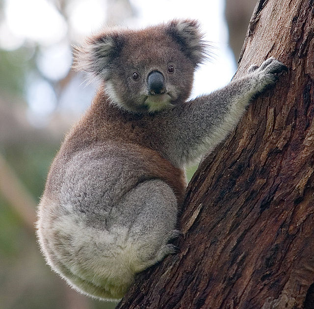

The koala (Phascolarctos cinereus or, inaccurately, koala bear[a]) is an arboreal herbivorous marsupial native to Australia. It is the only extant representative of the family Phascolarctidae, and its closest living relatives are the wombats.
The koala is found in coastal areas of the mainland's eastern and southern regions,inhabiting Queensland, New South Wales, Victoria and South Australia.
Koala Wikipedia
Etymology The word koala comes from the Dharug gula. Although the vowel 'u' was originally written in the English orthography as "oo" (in spellings such as coola or koolah), it was changed to "oa", possibly in error. The word is mistakenly said to mean "doesn't drink".[4] Because of the koala's resemblance to a bear, it was often miscalled the koala bear, particularly by early settlers.[5] Other names like monkey bear, native bear, and tree-bear have also been used.[4] Indigenous names include cullawine, koolawong, colah, karbor, colo, coolbun, boorabee, burroor, bangaroo, pucawan, banjorah, and burrenbong; many of these mean "no drink".[6] The generic name, Phascolarctos, is derived from the Greek words phaskolos "pouch" and arktos "bear". The specific name, cinereus, is Latin for "ash coloured".